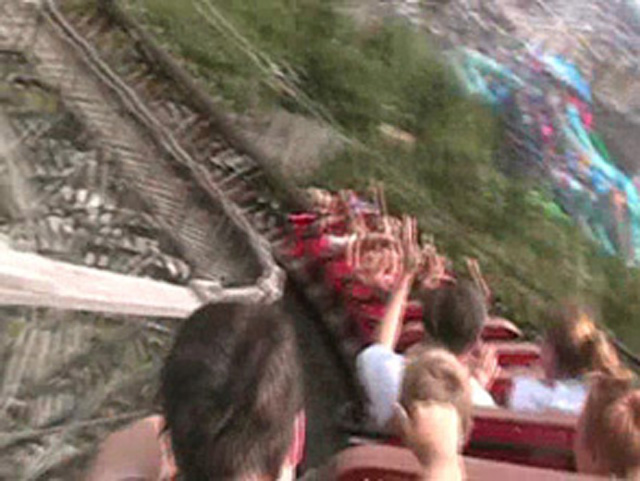
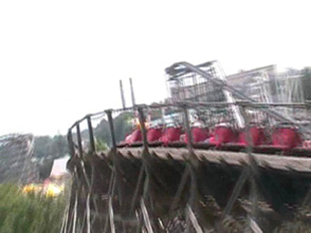
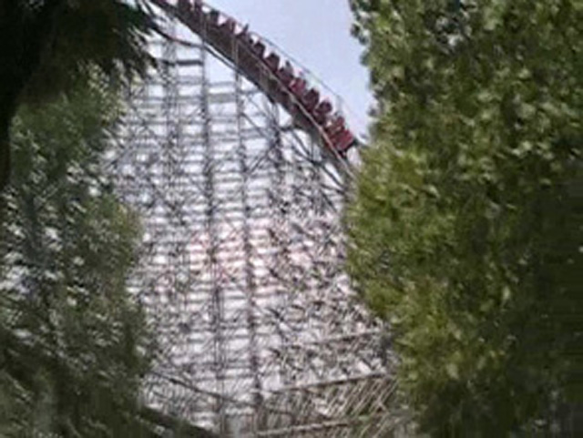
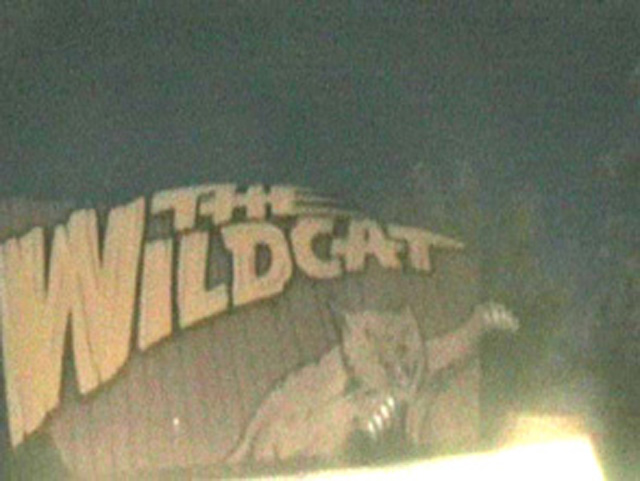

| |
Wildcat Review

We're here at Hersheypark. Today, we're here to review Wildcat. The First GCI ever built and the second woody at Hersheypark. Then you pull down the orange lap bar and away we go. We go through a turn that includes a small incline. We then go through a teeny tinny little bump before the lifthill. Then at the top of the lifthill, we get a good view of the Boardwalk if we look to our right. Then we twist down the first drop. We gain quite a bit of speed from the first drop. We then rise up into a hill before slamming into a left turn with a dip in the middle. This provides us with a good sense of laterals. we then go into some random left curved drop. While the drop isn't quite as crazy as we assume it would be, it does provide us with some laterals and even more speed. Then we rise up into some curved hill which give us more laterals. We then head down into a small drop before rising up into a big banked turnaround. The turnaround gives us some more laterals until we head down into a twisted drop to the left. We then head straight into a big banked turn. We're still maintaining good speed throughout the ride. We then dip down and then rise up into a twisted hill to the left before dropping back down to the left. We then rise up through a slight incline before going through another big turnaround. We're still going fast and have some nice laterals at this point of the ride. We then go through a couple dips and into the brake run. Now while it's nowhere near my favorite wooden coaster, it's still a fun coaster and a good start to GCI. I know that in the past, people have bitched about the ride hurting. Though most of that was back when the ride had PTCs and I rode it right when it got its new Millenium Flyer Trains, so I can't judge how the ride was with PTCs. However now, I'd recommend riding it while at Hersheypark if it's line isn't too long.
7/10
Location: Hersheypark
Opened: 1996
Built by: Great Coasters International
Last Ridden: July 27, 2007
Wildcat Photos



|